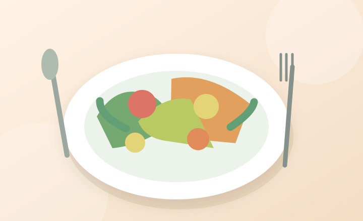

Aliméntate bien.
Comer rico y cuidarse pueden ir de la mano. No necesitas una dieta complicada: importa la variedad y adaptar las comidas a tus necesidades.
Ver consejos
Una alimentación que te acompaña
A medida que cambian nuestros hábitos y necesidades, conviene prestar atención a la calidad de los alimentos, los líquidos y el placer de comer.
Ideas fáciles de recordar
Pon color en tu plato
Incluye diferentes frutas y verduras siempre que puedas.
Varía tus alimentos
Combina fuentes de proteína, cereales, frutas y vegetales según tu plan de salud.
Recuerda beber líquidos
Mantén agua cerca; si te indicaron restringir líquidos, sigue esa orientación.
Disfruta las comidas
Comer acompañado o preparar algo sencillo también puede ser agradable.
Una idea sencilla para organizar el día
- Desayuno: un alimento de cereal, fruta y una fuente de proteína, según tus necesidades.
- Almuerzo: verduras, proteína y acompañamiento de cereal o tubérculo.
- Cena: una preparación ligera y nutritiva que te resulte fácil de consumir.
Si tienes diabetes, enfermedad renal, dificultades para tragar u otra condición, adapta la alimentación con un profesional. No todas las dietas son iguales.
Preguntas frecuentes
¿Debo dejar de comer mis platos favoritos?
No siempre. Muchas recetas pueden ajustarse en porciones o ingredientes según tus necesidades.
¿Qué hago si me cuesta masticar o tragar?
Consulta con tu profesional de salud. Puede ser importante adaptar la textura de los alimentos.
¿Tienes una pregunta?
Puedes escribirnos desde la página de contacto.